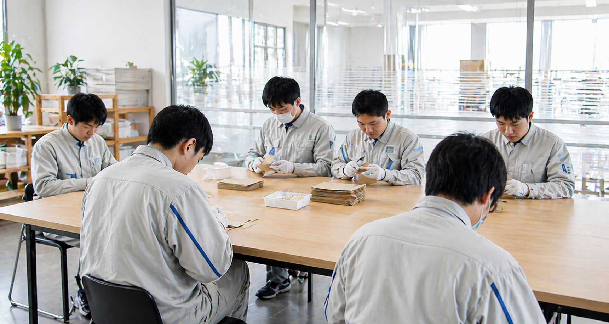
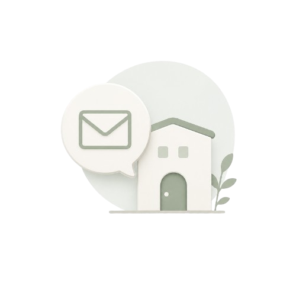
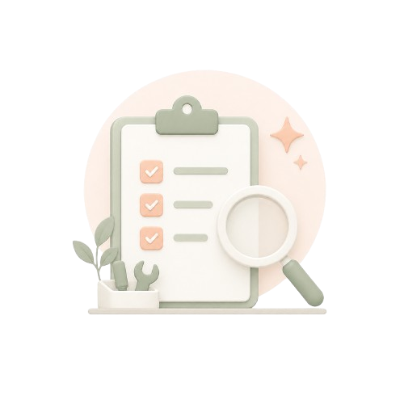
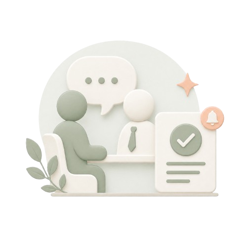
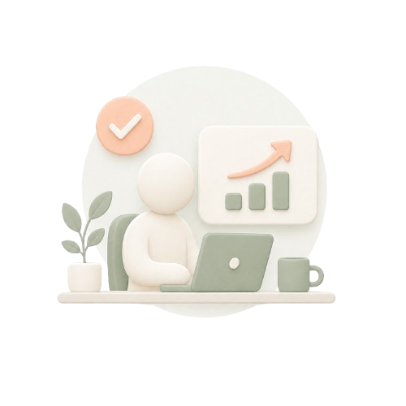

01
軽作業
封入、検品、仕分け、梱包など、手を動かしながら取り組める仕事です。確認を重ねながら、一つひとつ丁寧に進めます。
小ロットのご相談や、継続的な作業にも内容に合わせて対応します。
Work Support
就労継続支援事業所として、軽作業やIT業務を通じて働く経験を積み重ねます。
企業からお預かりする仕事にも、丁寧さと責任を持って取り組んでいます。

About us
私たちは、軽作業・IT業務を通じて、一人ひとりが自分のペースで働く経験を重ねられる就労継続支援事業所です。得意なことや不安なことを一緒に確認しながら、無理のない形で仕事に向き合えるよう支援します。
「まず見学だけしたい」「どんな仕事があるか知りたい」そんな段階からでも、気軽にご相談ください。
Services

封入、検品、仕分け、梱包など、手を動かしながら取り組める仕事です。確認を重ねながら、一つひとつ丁寧に進めます。
小ロットのご相談や、継続的な作業にも内容に合わせて対応します。

PCの基本から始められます
Web制作、ページ更新、データ入力、画像整理など、パソコンを使った仕事です。得意や関心に合わせて、少しずつ経験を広げていきます。
作業手順を確認しながら、日々の更新作業や運用補助もご相談いただけます。
Work Scene
スタッフがそばで確認しながら、軽作業やIT業務に取り組める環境を整えています。 働く人にとっての安心感と、企業にとっての任せやすさの両方を大切にしています。
はじめての方でも安心して相談できるよう、見学や体験の時間を大切にしています。 作業内容や通い方を一緒に確認しながら、自分に合った働き方を探していきます。

まずは事業所の雰囲気や作業内容を見ていただけます。ご本人だけでなく、ご家族や支援者の方からのご相談も可能です。

得意なこと、不安なこと、希望する働き方を一緒に確認します。実際の作業を体験しながら、自分に合う形を考えていきます。

スタッフとの面接を経て、利用の可否をご連絡します。ご本人の状況や希望をもとに、丁寧にお伝えします。

無理のないペースで、軽作業やIT業務に取り組みます。スタッフがそばで確認しながら、少しずつ経験を重ねていきます。
• Q&A •
見学や利用を考えている方、ご家族、支援者の方が気になりやすい内容をまとめました。
はい。事業所の雰囲気や作業内容を見てからご相談いただけます。
はい。ご本人だけでなく、ご家族や支援者の方からのご相談も可能です。
大丈夫です。軽作業など、できることや得意なことに合わせて作業を一緒に考えます。
軽作業、Web制作、ページ更新、データ入力などがあります。内容は見学や相談の中で確認できます。
はい。軽作業やIT業務について、内容が決まっていない段階でもご相談いただけます。
Contact
見学だけでも大丈夫です。 まだ決めきれていない段階でも大丈夫です。 利用を考えている方、ご家族、支援者の方、仕事の依頼を検討している企業の方まで、 内容が決まっていない段階でもご相談いただけます。